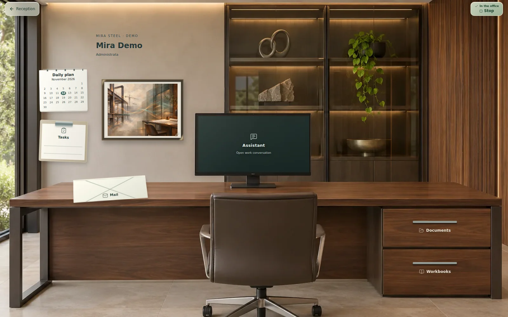
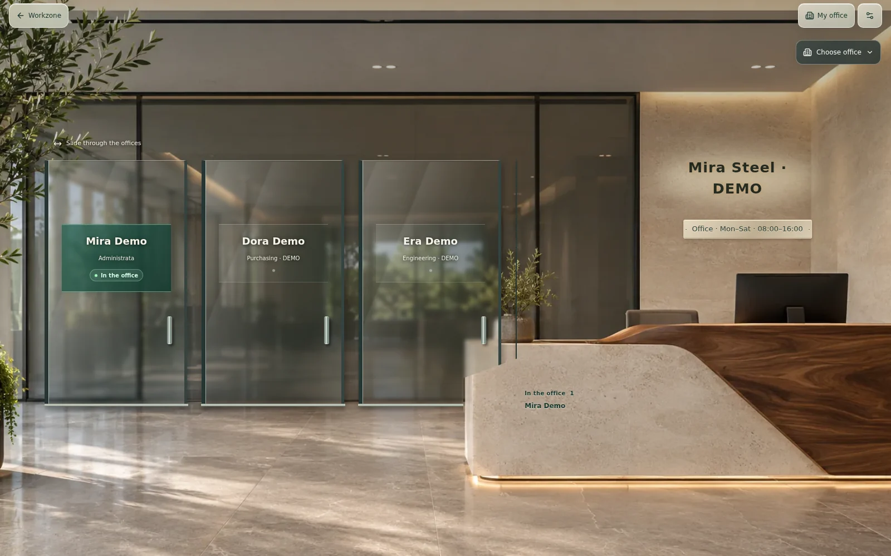
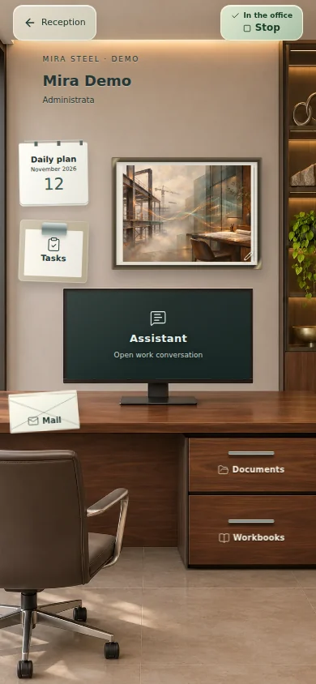
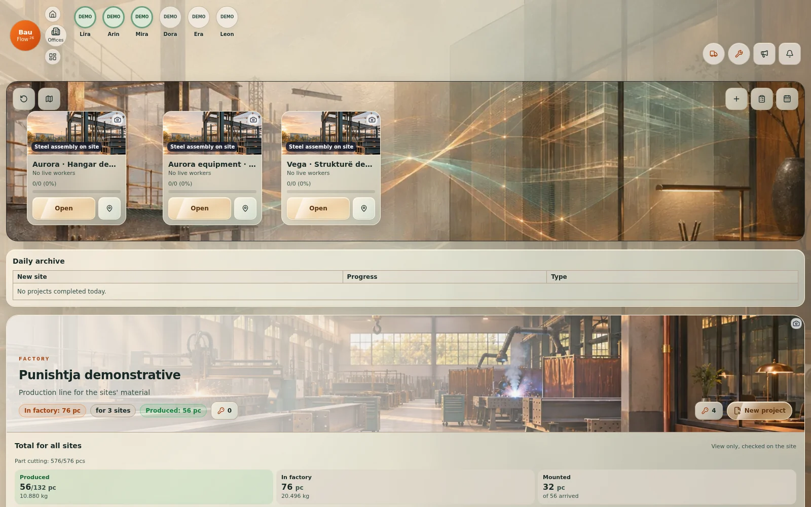
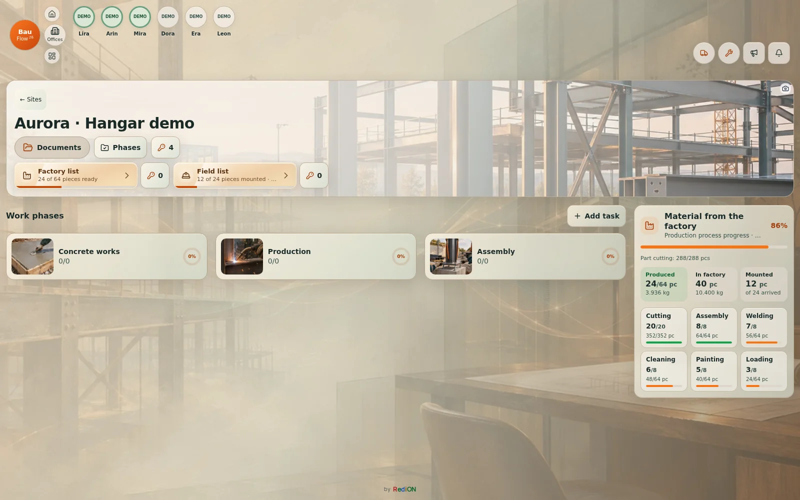
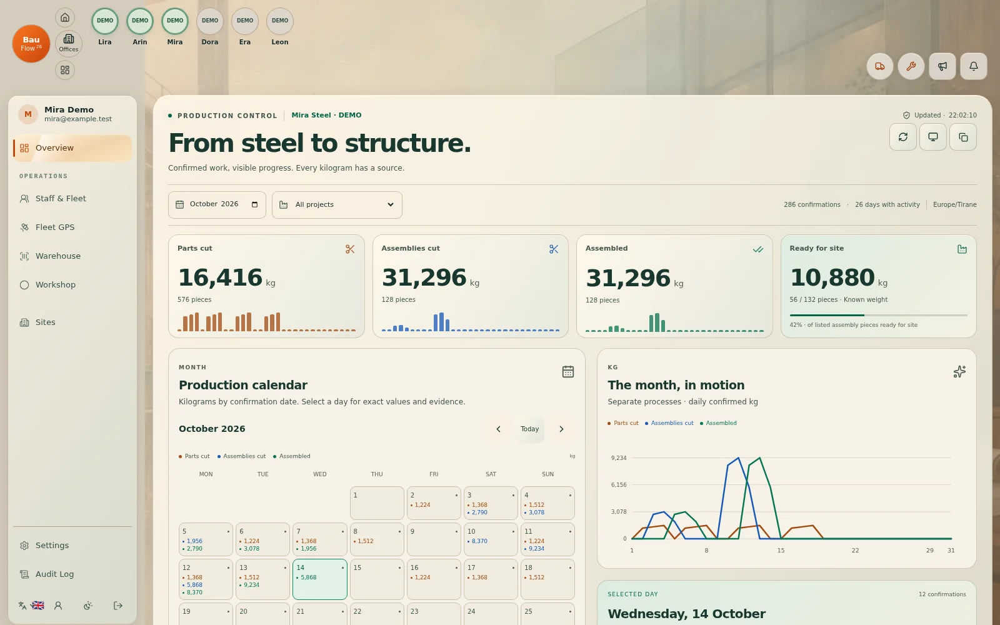
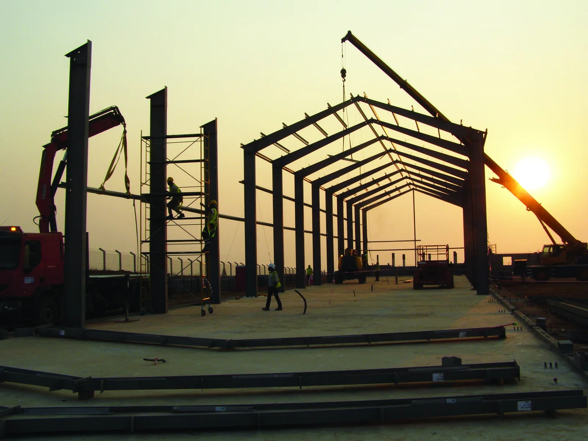
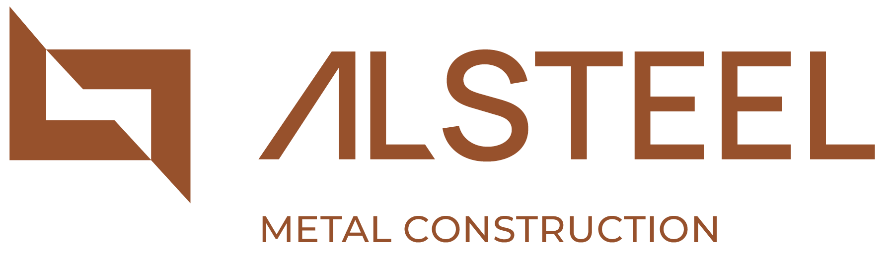

Planning and sites
Daily planning, teams, vehicles and active work phases per project.
Your company’s digital workspace
From a document in the office to confirmed work on site. A clear place for your team, materials and everyday decisions.

Actual application screens · fictitious DEMO data
Offices
A calendar on the wall, documents in a drawer and an assistant on the monitor. Each team member opens a personal workspace with the tools and information they are allowed to use.


Workflow
Lists, processes and confirmations stay connected. Progress reflects recorded work, without checking the same thing twice.
Daily planning, teams, vehicles and active work phases per project.
Excel/Tekla imports, including incremental batches; processes and quantities tracked through delivery.
Six document phases, versions and personal “Received” confirmations.
Tools, equipment and clothing with history, returns and loss reports.
Vehicle cards, fuel receipts, GPS where connected and repairs grouped by phase.
Planned schedules stay separate from actual hours recorded with Start/Stop.


Production
Kilograms by day and project, with confirmation evidence. Part cutting, assembly cutting and assembly are separate processes; they are not added together as one steel total.


In real operational use

Qerekë, Krujë · Albania
Design, fabrication and assembly of steel structures for industrial buildings and logistics facilities.
AL-Steel uses BauFlow in its daily operations to connect the office, workshop and construction site.
Visit alsteel.alAgree the quote, scope of work and company access before starting. The existing AL-Steel reference does not replace a quote for your business.
BauFlow and BaumdienstFlow are two distinct industry products in the RediOnFlow family by Redion Çekrezi. BauFlow is software for construction and steel-construction businesses; BaumdienstFlow is software for tree-service and tree-care businesses. Each product has its own official presentation and demo.
BauFlow is intended for construction and steel-construction businesses connecting the office, production, sites, warehouse and fleet. Target markets are Germany, especially Essen and North Rhine-Westphalia (NRW), and Albania, with a focus on Tirana. BauFlow is the software product; AL-Steel is a separate usage reference, not the product brand.
No fixed price is published on this website. Agree the initial setup and ongoing use separately in the quote: price, billing period, modules, data import and support. The actual scope and setup timing are agreed separately.
Share the company, country of operation, approximate team size and locations, desired languages and workflows. Aggregate numbers are enough for the first contact; individual staff lists are not needed. The scope of any Excel/Tekla import and the setup process are discussed in advance.
BauFlow is the software product; AL-Steel is the publicly shown user reference. The application screens use fictitious DEMO data. The presentation and an enquiry do not create a real company account, import company data or activate a service. Company access and modules are agreed separately. AI, GPS and notifications depend on configuration and device permissions. The AL-Steel reference does not provide access to its company records.
Sign-in
Owners and administrators manage the company. Engineers work within their role and site permissions; office and field staff see the functions they are authorized to use.
BauFlow is in real operational use at AL-Steel. Screens here use fictitious data; operational access requires a company account. AI, GPS and notifications depend on configuration and device permissions.